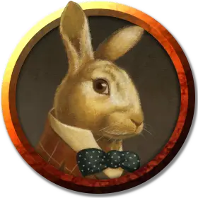

Кроликоголовый
Rabbithead
Средний Гуманоид, без мировоззрения

Класс Доспеха 10
Хиты 4 (1к8)
Скорость 30 футов
| мод | спас | ||
|---|---|---|---|
| СИЛ | 10 | +0 | +0 |
| ЛОВ | 10 | +0 | +0 |
| ТЕЛ | 10 | +0 | +0 |
| мод | спас | ||
|---|---|---|---|
| ИНТ | 10 | +0 | +0 |
| МДР | 10 | +0 | +0 |
| ХАР | 10 | +0 | +0 |
Чувства пассивное Восприятие 10
Опасность 0
Бонус мастерства +2
Особенности
Кроликоголовый. У него голова кролика и он не знает и не может говорить ни на одном языке.
Описание
Бедолага кролик был превращен магией Арктурии в уникального гуманоида. Трансформация постоянна и её нельзя обратить, кроме как с помощью заклинания исполнение желаний [wish]. Поскольку он больше не зверь, с ним нельзя общаться при помощи заклинания разговор с животными [speak with animals]. Обследовавший существо персонаж, с успешной проверкой Интеллекта (Магия) Сл 19, может установить, что существо наделено характерными особенностями кролика, получившему свой гуманоидный облик в результате постоянно действующего на него эффекта от заклинания истинное превращение [true polymorph].
Кроликоголовый убежал сюда от Арктурии и отказывается отходить от искателей приключений, надеясь, что они защитят его от ее гнева. Преуспевшие в проверке Мудрости (Проницательность) Сл 12 персонажи, смогут понять, что источник его страха находится где-то южнее, и действительно, он становится всё более нервным по мере их приближения к зоне 17.